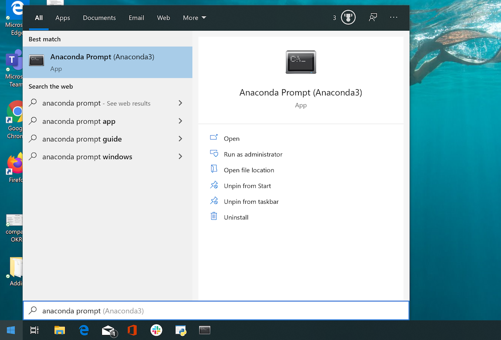

How to install Python on Windows using Anaconda
- Download the Python3.7 Graphical installer from the anaconda website
- Follow the conda installation instructions
How do I install the SDK on Windows?
- First, open up an Anaconda Prompt. Hit the start button and type anaconda prompt.

- Use pip to install the sdk
Run pip install --user vortexasdk in the anaconda command prompt

You're done! The VortexaSDK has now been installed.
How do I install the SDK on Mac / Linux?
Type the following into a bash terminal
$ pip install vortexasdk
How do I add an environment variable on Windows?
- Hit the windows key, then type "environment" to open up a control panel settings page titled "Edit the system environment variables"

- In the System Properties window, click on the Advanced tab, then click the Environment Variables button near the bottom of that tab.
- Add a new user variable

Where is my API Key?
Refer to Vortexa API Authentication for details, including instructions on where to find your API key.
How do I request an API Key?
You can request a demo here.
More details are given in docs.vortexa.com.
Alternatively, please get in touch at www.vortexa.com.
How can I check the SDK is setup correctly?
Run the following in a bash console on Mac/Linux, or command prompt on Windows:
$ python -m vortexasdk.check_setup
A successful setup looks like this:

On Windows, you'll need to paste the API key by right clicking the console menu, like so:
Hitting Ctrl+V won't paste the API key, this is due to a known python windows bug